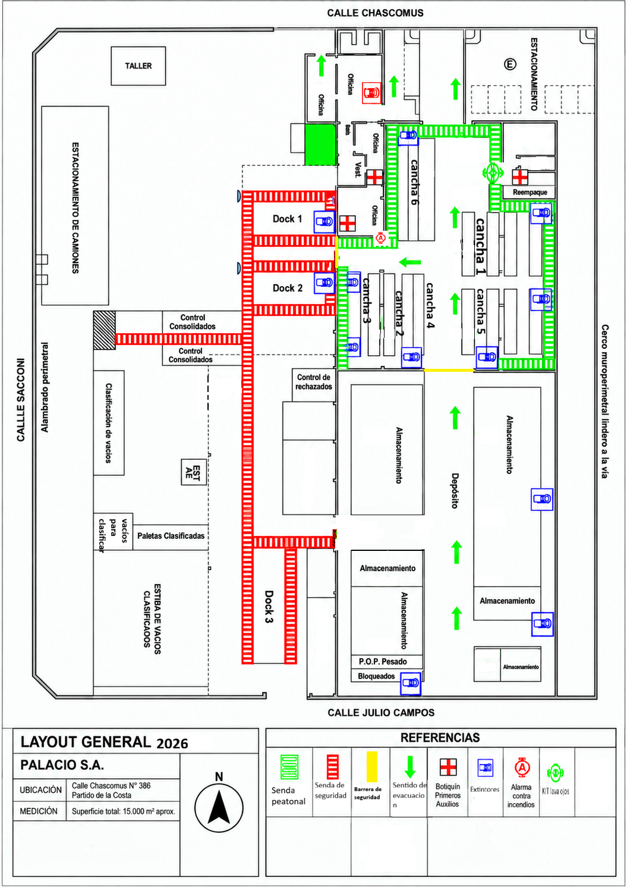

Casa Central · Layout 2026
Mapa para visitantes
Explorá los sectores, consultá la señalización y ubicá el punto de encuentro.
Seleccioná un sector
Casa Central · distribución aproximada · ambientación ilustrativa
Agregar etiquetas y trazados al gráfico
Elegí un tipo y pulsá «Colocar en el gráfico». Para una senda, marcá inicio y fin; los tramos se ajustan horizontal o verticalmente.
Guardado en este navegador. Exportá tus agregados para compartirlos o llevarlos a otro dispositivo. No se publican automáticamente para los demás visitantes.
Sin colocación en curso.
Alcance del modelo: distribución trazada a partir del Layout general 2026 de Casa Central. El plano declara una superficie total aproximada de 15.000 m², pero no aporta cotas por sector ni alturas: los volúmenes 3D son ilustrativos. Esta vista no define rutas de circulación ni de evacuación. No usa GPS interior: el sector se indica mediante QR o selección manual.
Consultar plano original · Casa Central 2026
Referencia aportada para esta sede. Conserva las sendas, señales y leyenda del documento original; el modelo 3D simplifica su distribución.
Abrir plano en tamaño completo ↗